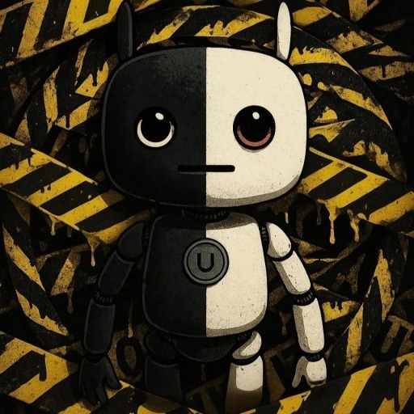

Profile

Ushizaru / うしざる
AIを活用した音楽、画像、動画の制作。
主にミュージックビデオやショートフィルム等。
加えて、自作のAIロックバンド「球体関節人類」を運営。
Awards
- 2025年 DomoAI AI動画コンテスト / MV部門 優秀賞
- 2025年 AI日本国際映画祭 / セレクション(上映選出)
- 2025年 SousakuAI Christmas Creation Cup / グランプリ
- 2026年 くりえみAIフィルムコンテスト / ショートフィルム部門 ノミネート